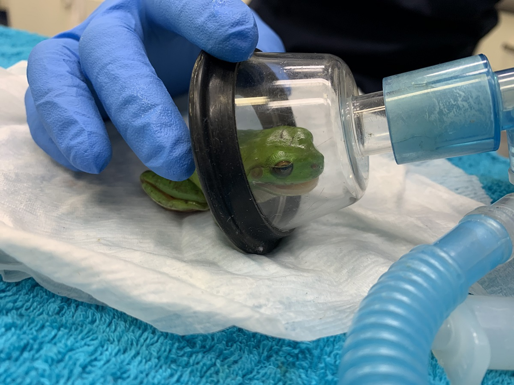

What Impact Do These Frogs Have?

Positive Impacts of Humans on Tree Frogs
Human interactions with red-eyed tree frogs can be positive,
with veterinarians treating injured frogs, conservationists protecting habitats through
anti-deforestation efforts, ecotourism raising awareness,
and environmental organizations restoring degraded rainforest areas.
Red-eyed tree frogs play a crucial role in maintaining the health and balance of their ecosystems.
As both predators and prey, these vibrant amphibians help control insect populations,
which supports plant growth and reduces the spread of insect-borne diseases.
By providing a food source for a variety of larger animals, including birds, snakes,
and mammals, red-eyed tree frogs contribute to the food web, sustaining biodiversity.
Additionally, their presence in rainforests acts as an indicator of environmental health,
as they are highly sensitive to changes in their habitat, such as pollution and climate shifts.
Protecting these frogs is essential not only for preserving the beauty of the rainforest
but also for maintaining its ecological stability.
Common Predators and Prey
Red-eyed tree frogs may be tiny, but they are constantly under threat from a host of formidable
predators in the wild. Snakes, especially agile tree-climbers, silently stalk these colorful frogs
as they sleep in the safety of leaves, ready to strike at any moment. Predatory birds,
like toucans and herons, swoop down from above, searching the forest canopy for a quick meal,
while mammals like opossums and even certain bats seize any chance to prey on these vulnerable frogs.
Each predator relies on red-eyed tree frogs as a crucial part of their diet,
creating a delicate balance in the rainforest ecosystem. When we protect these frogs,
we’re not just helping a single species; we’re safeguarding an entire web of life that depends
on their survival.

Negative Impacts of Humans on Tree Frogs
Human interactions with red-eyed tree frogs are largely negative,
as deforestation destroys their habitat, pollution contaminates their water sources,
and climate change disrupts the rainforest ecosystem they depend on.
Red-eyed tree frogs play an equally important role as tiny hunters in their own right,
feeding on insects that would otherwise swarm the rainforest. With lightning-fast reflexes and
sticky tongues, they capture crickets, flies, moths, and other small insects, preventing pest
populations from overwhelming the delicate ecosystem. By keeping insect numbers in check,
these frogs protect rainforest plants from harmful pests, allowing the forest to thrive.
Their hunting efforts may seem small, but they ripple through the ecosystem, supporting plant life,
preserving biodiversity, and even benefiting larger animals that rely on the forest’s resources.
Helping red-eyed tree frogs means supporting the natural pest control they provide, ultimately
preserving the balance of the rainforest. Protecting these little green warriors is a simple
but powerful way to ensure the health and resilience of one of Earth’s most precious ecosystems.
How Do We Impact Them?
Human activities are posing a serious threat to the natural habitat of red-eyed tree frogs,
placing their future—and the health of the rainforest—at risk. Deforestation is one of the greatest
dangers, as large areas of rainforest are cleared for agriculture, logging, and urban development,
stripping away the dense canopy and humid environment these frogs need to survive. Pollution from
pesticides, fertilizers, and industrial runoff seeps into the frogs’ water sources,
poisoning their fragile ecosystems and leading to health problems or death.
Climate change, driven by human-induced greenhouse gas emissions, is also altering rainfall patterns
and increasing temperatures, disrupting the delicate balance of their habitat. As a result, red-eyed
tree frogs face shrinking habitats, fewer breeding sites, and increased vulnerability to disease.
By taking action to protect and restore these habitats, we can help ensure the survival of red-eyed
tree frogs and preserve the critical ecological roles they play in the rainforest.